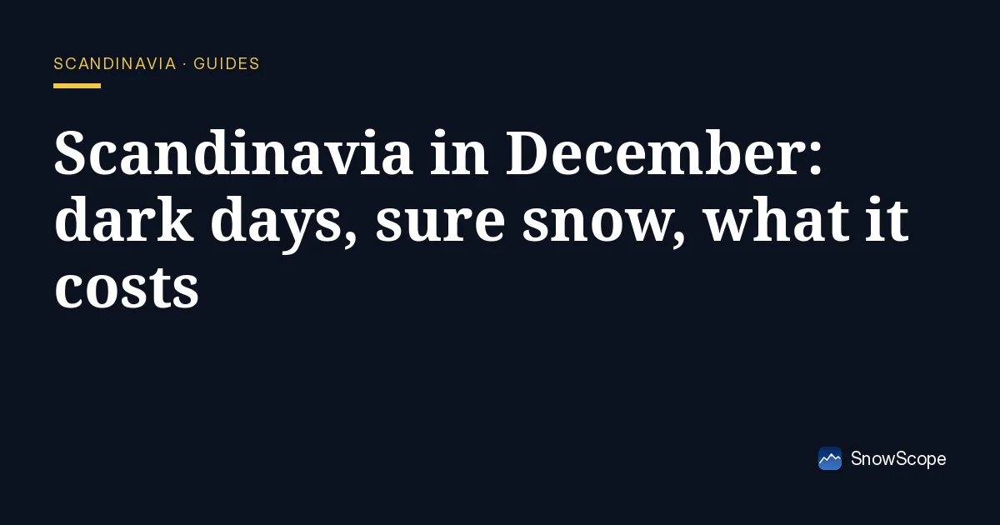

Scandinavia in December: dark days, sure snow, what it costs
December in Scandinavia brings cold certainty and dim light. At mid-mountain height across the region, snow depth hits 30 cm or more in almost every winter—from 83 % at Levi and Ylläs to 100 % at Hemavan. The catch: short days, steep pricing that shifts by date in Norway and Sweden, and a south-to-north split in reliability.
See the live snow forecast for Scandinavia in December in the SnowScope appSnow depth, powder alerts and the 3D map, free.
Where the odds favour you
If you ski at mid-mountain, Scandinavia is predictable. Hemavan, Hemsedal, Oppdal and Geilo all hit 30 cm or more in 96–100 % of mid-December weeks across 46 winters. Hemavan leads on depth: 82 cm is typical on 15 December at mid-height. The Swedish and Finnish mid-mountains follow: Ylläs 38 cm (average across the whole low-lying area), Hemavan's lower slopes 82 cm, Hemsedal's mid-zone 70 cm.
Lower altitudes and southern resorts are riskier. Sälen, the lowest and southernmost Swedish resort, sees 30 cm or more in only 48 % of mid-December weeks. Idre Fjäll manages 65 %, Åre 89 %. The pattern is clear: go higher or go north for winter certainty.

Christmas week versus early December
Early December is a gamble in the south. At Sälen's mid-level, only 48 % of winters had 30 cm by 15 December in the week of 15–21 December. Wait. Christmas week (22–28 December) is much safer: 61 % of winters delivered 30 cm at Sälen then, and 98 % at Hemsedal's mid-mountain and 98 % at Geilo. Northern resorts like Hemavan stay consistent: 100 % in both weeks at mid-height.
At the summit across all resorts, December is virtually guaranteed. Hemavan's top (1136 m) has seen 30 cm or more in 100 % of mid-December and Christmas weeks alike. Plan an early-December trip north or high; plan a Christmas-week trip anywhere.
The vertical gamble: base versus top
Steep resorts force a choice. Hemsedal drops 800 m from top to base; Hemavan 674 m; Oppdal 742 m. At the base in mid-December, snow reliability falls sharply. Hemsedal's valley (640 m) reaches 30 cm in only 57 % of mid-December weeks; its summit (1439 m) reaches it in 100 %. Oppdal's base (585 m) hits 93 %, but that is still not certain. Flatter resorts with less vertical—Sälen, Idre Fjäll, Levi, Ruka—avoid this split but start lower overall.
Christmas week narrows the gap. At Hemsedal's base, 65 % of winters hit 30 cm or more in Christmas week, up from 57 % in mid-December. Plan base runs for Christmas; plan mid-mountain for any December week.
Long-term trends: the north stays steady
Over the last 15 winters (2011–12 to 2025–26), northern resorts held their snow. Hemavan's Christmas weeks still delivered 30 cm at mid-height in 100 % of winters; Levi in 100 %; Hemsedal in 100 %; Ylläs in 100 %. Oppdal and Ruka both managed 93 %. But southern lower resorts have weakened. Sälen's Christmas weeks dropped to 47 % of winters with 30 cm at mid-level, down from higher shares in the full 46-winter record. Idre Fjäll sits at 60 %.
This shift matters for planning. If you have flexibility, book north or high. If you must ski south in December, pick Christmas week and book a high-altitude run.
Prices: Finland fixed, Norway and Sweden fluid
Finland publishes fixed prices and sticks to them. Levi charges EUR 60 a day (or EUR 57 if booked online 14 days ahead), Ylläs EUR 60 (EUR 55.50 until 11 December), Ruka EUR 58 a day or EUR 265 for 6 days. You can plan a budget and book with certainty.
Norway and Sweden use dynamic pricing set by date. Geilo shows NOK 590 (about EUR 56 on the 12 November exchange rate), but Trysil, Hemsedal, Hafjell, Oppdal, Åre, Sälen, Idre Fjäll and Hemavan do not publish fixed prices on their online shops. Book early and online; avoid the Christmas holiday week if cost matters.
Daylight: plan around the dark
December daylight shrinks as you go north. Southern Norway and Sweden still have a few hours of real daylight; Finnish Lapland enters polar night. Levi and Ylläs sit in darkness for part of December, when the sun does not rise above the horizon. That is striking but cold, and it cuts ski hours sharply. Start before dawn if you want afternoon light; bring thick base layers and hand warmers; expect slopes to stay frozen.
Resorts at mid-altitude in central Norway and Sweden fare better. Geilo, Oppdal and Hemsedal have more daylight hours than the far north but still far less than summer. Plan your best runs before lunch and take the lift down if conditions darken.
Tips for skiers
- For a fixed price you can budget with, choose Finland: Levi, Ylläs and Ruka publish day and multi-day passes without surprises.
- In Norway and Sweden, buy lift passes online and book early; prices change with the date and are highest in the Christmas holiday window.
- Pick mid-mountain or higher for December certainty; base runs are safer in Christmas week than early December.
- In southern resorts (Sälen, Idre Fjäll, Åre), wait until Christmas week; northern resorts (Hemavan, Ylläs, Levi) are reliable from early December.
- December days are short: start at first light, eat lunch fast, and check the national avalanche forecast before skiing off-piste in the dark.
About these numbers
Resort snow depths are the deepest snow on the resort's upper slopes on the date shown; they are estimates for an area, not a measurement at one point. Forecasts can change. Always read the official avalanche bulletin before going off-piste.
Cite this report
For research, teaching or the press: the numbers and charts are free to reuse under CC BY 4.0 with this citation.
SnowScope (2026), Scandinavia in December: dark days, sure snow, what it costs, https://snowscope.app/blog/en/2026/11/scandinavia-december-skiing-dark-days-sure-snow-cost.html, accessed 2026-11-14
SnowScope (Atlas Labs). (2026, November 14). Scandinavia in December: dark days, sure snow, what it costs. SnowScope snow reports. https://snowscope.app/blog/en/2026/11/scandinavia-december-skiing-dark-days-sure-snow-cost.html
BibTeX
@misc{snowscope2026scandinaviadecemberskiin,
author = {{SnowScope (Atlas Labs)}},
title = {Scandinavia in December: dark days, sure snow, what it costs},
year = {2026},
month = nov,
howpublished = {\url{https://snowscope.app/blog/en/2026/11/scandinavia-december-skiing-dark-days-sure-snow-cost.html}},
note = {Published 2026-11-14 13:29 UTC; accessed 2026-11-14}
}· CC BY 4.0 · Methods, data and tools →
Follow Scandinavia in December
Free: a message when fresh snow is coming, and the forecast every morning.
More snow reports

Idre Fjäll's December snow odds improve sharply after mid-month. On 13 November, the typical mid-mountain depth on 15 December is 32 cm.

On 15 December, Hemsedal shows 32 cm at base, 70 cm at mid-mountain and 106 cm at top. Height is everything here.

Hemavan's mid-mountain has 82 cm of snow on a typical 15 December. Every winter in 46 years had 30 cm or more in mid-December. Data from 13 November 2026.